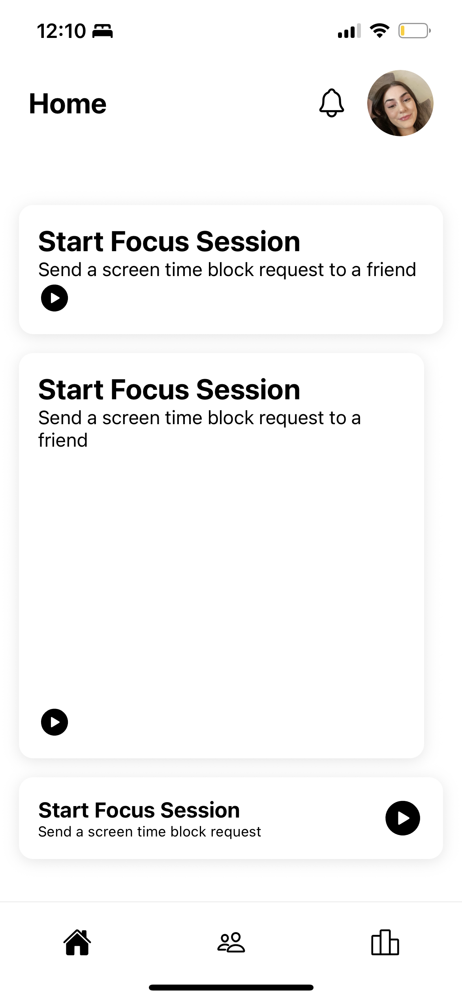
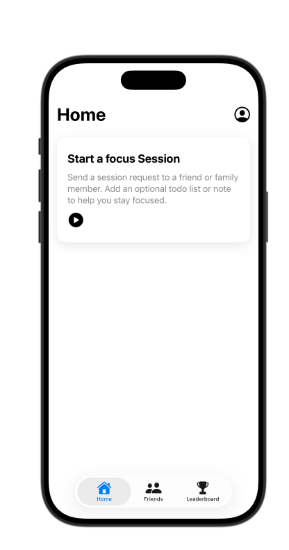
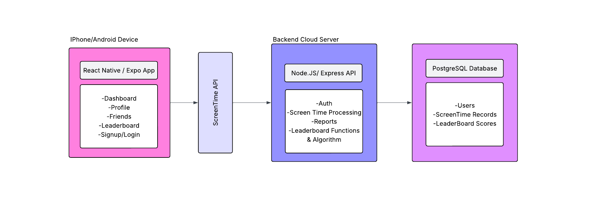
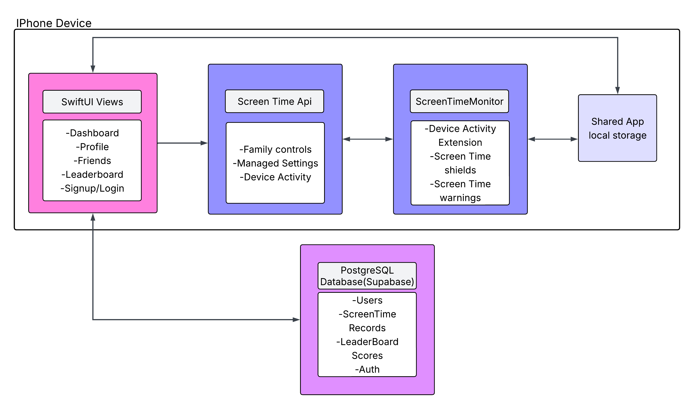
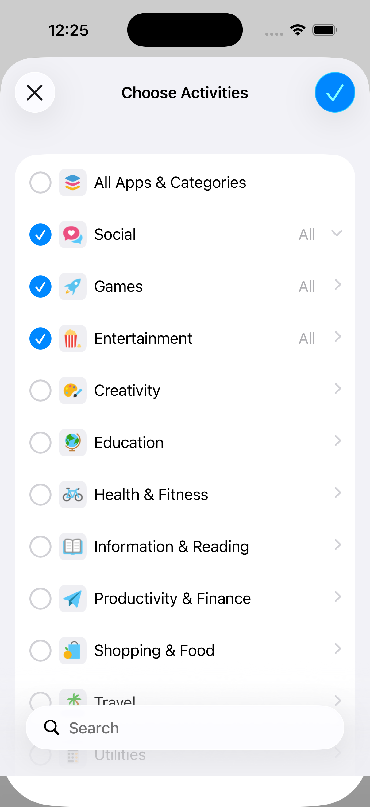
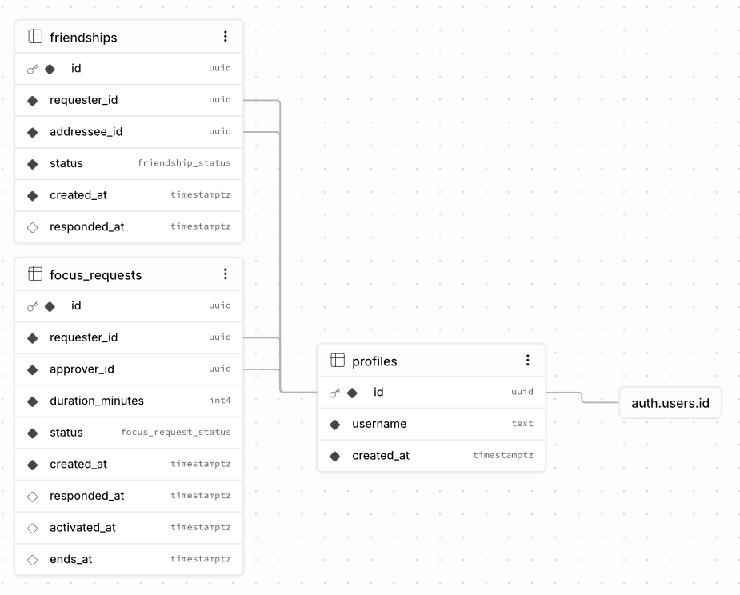

01 · Defining the work
Problem, Requirements, and Constraints
The project began as an accountability-based screen time app. Its core experience required a user to create a focus session, select distracting apps, and involve a trusted friend who could approve the session or end it early.
People often struggle to focus on important tasks because of the distractions of their devices. The app’s goal is to help users stay focused by providing a way to block distracting apps during a focus session. There are plenty of apps that can block other apps, but they often lack accountability and social support. This app addresses that gap by allowing users to involve a friend in their focus sessions this provides the accountability of a friend who can monitor and approve the session.
The original scope included registration and login, a dashboard, friends, profiles, focus sessions, notifications, a leaderboard, securing user data, and reliable app blocking. I initially hoped to support both iOS and Android, but Apple’s privacy model and native Screen Time frameworks became the project’s most important technical constraint.
02 · First approach
Starting with React Native
React Native was the natural first choice because it offered cross-platform deployment and built on my existing React and web-development experience. This phase let me explore mobile project structure, Expo, interface development, and the backend services the app would need.
-
Transfer existing skills
Coming from web development, I was familiar with React concepts such as components, props, and state. However, I had to learn about mobile-specific considerations such as touch interactions, platform-specific view syntax, dark mode, and user preferences. Expo provided a streamlined development environment, but I also needed to understand its limitations and how to handle navigation between screens.
-
Build the first prototype
I started by creating the UI in React Native, focusing on bare-bones versions of every page so the application would have a complete skeleton. After that, I could begin creating the database and connecting the backend to the front end.
-
Discover the platform constraint
After reading Apple’s Screen Time documentation, I realized that the frameworks required for app blocking and focus sessions were available only through native Swift APIs. This meant I would have to create a custom native bridge to access them from React Native, adding complexity and potential reliability issues. My main concern was that performance could degrade and the user experience could suffer if the bridge was not implemented correctly. Native code would also prevent me from using Expo Go. Instead, I would have to build the project with Xcode and run it on a simulator or physical device, slowing development and testing.



03 · Final system
Architecture and Tools
The final system combines a SwiftUI interface, Apple’s Screen Time frameworks, a DeviceActivity monitor extension, shared local storage, and a Supabase backend.
- Swift and SwiftUI: native application structure and interface
- FamilyControls, ManagedSettings, and DeviceActivity: authorization, selection, scheduling, and shielding
- Supabase: PostgreSQL data, authentication, Row Level Security, and Realtime events
- GitHub: source control and development history
- Figma: interface and visual-design exploration
- VS Code: project IDE

04 · Learning by doing
Major Implementation Areas
The final application came together through three connected areas: rebuilding the interface in SwiftUI, implementing Apple’s Screen Time frameworks, and creating a secure shared backend with Supabase.
Front end
SwiftUI and Interface Evolution
I was able to recreate the React Native interface in SwiftUI relatively quickly. SwiftUI felt intuitive, and it handled some design behavior out of the box. This allowed me to create a working prototype that I could refine after making more progress on the app’s core features.
Current focus: The hardest part of learning SwiftUI was connecting views to their view models. I had to learn how property wrappers such as @StateObject and @ObservedObject manage state and data flow between views.
Core feature
Screen Time Authorization and App Blocking
Narrative: Apple’s Screen Time frameworks are the core of the app’s focus-session experience. They provide the permissions, selection, scheduling, and shielding capabilities that allow users to block chosen apps during a focus session. The Family Controls framework handles authorization and provides the FamilyActivityPicker shown in Figure 5. The ManagedSettings framework allows the app to apply restrictions and shields, while DeviceActivity monitors sessions and triggers those shields at the right time. At first, I had difficulty understanding how to request authorization and present the FamilyActivityPicker. After reading the documentation, experimenting with the code, and finding a helpful blog post, I was able to implement it and adjust it to my needs. The next challenge was reliably saving the selections and sharing them with the monitor extension, which required shared app-group storage. Finally, I had to schedule focus sessions, apply the shields, and clear the restrictions when each session ended. I placed this logic in a separate class to make it easier to test and debug.

Back end
Supabase, Security, and Realtime
Narrative: Supabase provides the backend services for the app, including user authentication, database storage, and Realtime updates. I used Supabase authentication to manage user accounts and login sessions, and I created the PostgreSQL schema shown in Figure 6 to store user profiles, friendships, and focus requests. I implemented Row Level Security policies to ensure that users could access only their own data and that friends could see only the information they were authorized to view. I also used Supabase’s Realtime feature to receive focus-request status changes as they happened. This allowed the app to update the interface immediately when a friend approved or denied a request and to initiate the app block after approval.

05 · Reliability
Testing, Challenges, and Applied Learning
As of Quarter 1 my testing and debugging process is still in progress. I have been testing the app on a simulator and on a physical device, and I have been using the Xcode debugger to identify and fix issues. I have gotten feedback from stakeholders and peers, and I have been using that feedback to improve the app’s functionality and user experience. The feedback has been limited because for Quarter 1 the app is not yet fully functional. The focus session feature has just recently been implemented.
06 · Conclusion
Next Steps
At the end of Quarter 1, my app has a functioning authorization flow and the ability to send a focus-session request. When a friend accepts the request, the app automatically blocks the user’s selected apps. It also supports a local focus session that does not require an accountability partner.